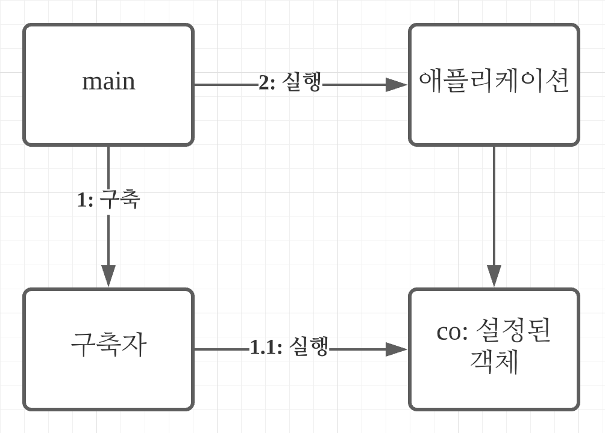
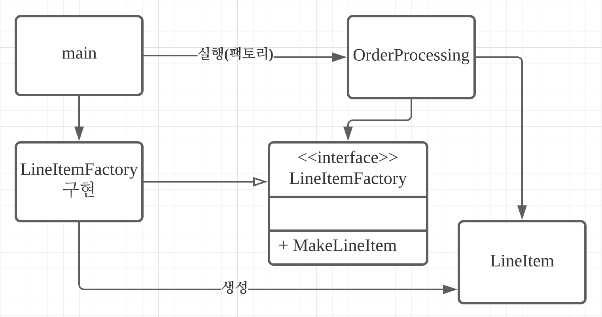

<meta charset="utf-8">
<html lang="ko">
<head>
    <link rel="stylesheet" type="text/css" href="./../style.css" />
    <title>11. 시스템</title>
</head>
<body id="tt-body-page" class="">
<div id="wrap" class="wrap-right">
    <div id="container">
        <main class="main ">
            <div class="area-main">
                <div class="area-view">
                    <div class="article-header">
                        <div class="inner-article-header">
                            <div class="box-meta">
                                <h2 class="title-article">11. 시스템</h2>
                                <div class="box-info">
                                    <p class="category">도서/클린코드</p>
                                    <p class="date">2022-01-25 13:56:49</p>
                                </div>
                            </div>
                        </div>
                    </div>
                    <hr>
                    <div class="article-view">
                        <div class="contents_style">
                            <p style="text-align: left;" data-ke-size="size16">&nbsp; <span style="font-family: 'Noto Serif KR';">시스템 수준에서 깨끗함을 유지하는 방법을 살펴보자</span></p>
<p style="text-align: left;" data-ke-size="size16">&nbsp;</p>
<p style="text-align: left;" data-ke-size="size16"><span style="font-family: 'Noto Serif KR';"><b>시스템 제작과 시스템 사용을 분리하라.</b></span></p>
<p style="text-align: left;" data-ke-size="size16"><span style="font-family: 'Noto Serif KR';">&nbsp; 소프트웨어 시스템은 애플리케이션 객체를 제작하고 의존성을 서로 연결하는 준비 과정과 준비 과정 이후에 이어지는 런타임 로직을 분리해야 한다.</span></p>
<p style="text-align: left;" data-ke-size="size16"><span style="font-family: 'Noto Serif KR';">&nbsp; 시작 단계는 모든 애플리케이션이 풀어야 할 관심사다. 관심사 분리는 개발 분야에서 가장 오래되고 가장 중요한 설계 기법 중 하나다. 하지만 대다수 애플리케이션은 시작 단계라는 관심사를 분리하지 않는다. 준비 과정을 주먹구구식으로 구현하고 런터임 로직과 뒤섞는다.</span></p>
<div class="colorscripter-code" style="color: #010101; font-family: Consolas, 'Liberation Mono', Menlo, Courier, monospace !important; position: relative !important; overflow: auto;">
<table class="colorscripter-code-table" style="margin: 0; padding: 0; border: none; background-color: #fafafa; border-radius: 4px;" cellspacing="0" cellpadding="0" data-ke-align="alignLeft">
<tbody>
<tr>
<td style="padding: 6px; border-right: 2px solid #e5e5e5;">
<div style="margin: 0; padding: 0; word-break: normal; text-align: right; color: #666; font-family: Consolas, 'Liberation Mono', Menlo, Courier, monospace !important; line-height: 130%;">
<div style="line-height: 130%;"><span style="font-family: 'Noto Serif KR';">1</span></div>
<div style="line-height: 130%;"><span style="font-family: 'Noto Serif KR';">2</span></div>
<div style="line-height: 130%;"><span style="font-family: 'Noto Serif KR';">3</span></div>
<div style="line-height: 130%;"><span style="font-family: 'Noto Serif KR';">4</span></div>
<div style="line-height: 130%;"><span style="font-family: 'Noto Serif KR';">5</span></div>
<div style="line-height: 130%;"><span style="font-family: 'Noto Serif KR';">6</span></div>
</div>
</td>
<td style="padding: 6px 0; text-align: left;">
<div style="margin: 0; padding: 0; color: #010101; font-family: Consolas, 'Liberation Mono', Menlo, Courier, monospace !important; line-height: 130%;">
<div style="padding: 0 6px; white-space: pre; line-height: 130%;"><span style="font-family: 'Noto Serif KR';"><span style="color: #a71d5d;">public</span>&nbsp;Service&nbsp;getService()&nbsp;{</span></div>
<div style="padding: 0 6px; white-space: pre; line-height: 130%;"><span style="font-family: 'Noto Serif KR';">&nbsp;&nbsp;&nbsp;&nbsp;<span style="color: #a71d5d;">if</span>&nbsp;(service&nbsp;<span style="color: #0086b3;"></span><span style="color: #a71d5d;">=</span><span style="color: #0086b3;"></span><span style="color: #a71d5d;">=</span>&nbsp;<span style="color: #066de2;">null</span>)&nbsp;{</span></div>
<div style="padding: 0 6px; white-space: pre; line-height: 130%;"><span style="font-family: 'Noto Serif KR';">&nbsp;&nbsp;&nbsp;&nbsp;&nbsp;&nbsp;&nbsp;&nbsp;service&nbsp;<span style="color: #0086b3;"></span><span style="color: #a71d5d;">=</span>&nbsp;<span style="color: #a71d5d;">new</span>&nbsp;MyServiceImpl(...);</span></div>
<div style="padding: 0 6px; white-space: pre; line-height: 130%;"><span style="font-family: 'Noto Serif KR';">&nbsp;&nbsp;&nbsp;&nbsp;}</span></div>
<div style="padding: 0 6px; white-space: pre; line-height: 130%;"><span style="font-family: 'Noto Serif KR';">&nbsp;&nbsp;&nbsp;&nbsp;<span style="color: #a71d5d;">return</span>&nbsp;service;</span></div>
<div style="padding: 0 6px; white-space: pre; line-height: 130%;"><span style="font-family: 'Noto Serif KR';">}</span></div>
</div>
<div style="text-align: right; margin-top: -13px; margin-right: 5px; font-size: 9px; font-style: italic;"><span style="font-family: 'Noto Serif KR';"><a style="color: #e5e5e5text-decoration:none;" href="http://colorscripter.com/info#e" target="_blank" rel="noopener">Colored by Color Scripter</a></span></div>
</td>
<td style="vertical-align: bottom; padding: 0 2px 4px 0;"><span style="font-family: 'Noto Serif KR';"><a style="text-decoration: none; color: white;" href="http://colorscripter.com/info#e" target="_blank" rel="noopener"><span style="font-size: 9px; word-break: normal; background-color: #e5e5e5; color: white; border-radius: 10px; padding: 1px;">cs</span></a></span></td>
</tr>
</tbody>
</table>
</div>
<p style="text-align: left;" data-ke-size="size16"><span style="font-family: 'Noto Serif KR';">&nbsp; 위 코드는 getService 메서드가 MyServiceImpl와 생성자 인수에 명시적으로 의존한다. 런타임 로직에서 MyServiceImpl 객체를 전혀 사용하지 않아도 의존성을 해결하지 않으면 컴파일이 안된다.</span></p>
<p style="text-align: left;" data-ke-size="size16"><span style="font-family: 'Noto Serif KR';">&nbsp; 테스트 역시 문제가 된다. MyServiceImpl가 무거운 객체면 간위 테스트에서 getService 메서드를 호출하지 전에 목 객체를 service 필드에 할당해야 한다. 또한 일반 런타임 로직에 생성 로직을 섞어 놓았기 때문에 모든 실행 경로도 테스트 해야 한다. 책임이 둘이라는 말은 메서드가 작업을 두 가지 이상 수행한다는 의미이다. 따라서 작게나마 단일 책임 원칙을 위배한다.</span></p>
<p style="text-align: left;" data-ke-size="size16"><span style="font-family: 'Noto Serif KR';">&nbsp; 초기화 지연을 한 번만 사용하는 것은 별 문제가 되지 않는다. 하지만 여러번 사용할 경우 전반적인 설정 장식이 애플리케이션 곳곳에 흩어져 있게 되고 모듈성은 저조되고 중복이 발생한다.</span></p>
<p style="text-align: left;" data-ke-size="size16"><span style="font-family: 'Noto Serif KR';">&nbsp; 설정 논리는 일반 실행 논리와 분리해야 모듈성이 높아진다. 또한 전반적이며 일관적인 방식도 필요하다.</span></p>
<p style="text-align: left;" data-ke-size="size16"><span style="font-family: 'Noto Serif KR';">&nbsp;&nbsp;<i><b>Main 분리</b></i></span></p>
<p style="text-align: left;" data-ke-size="size16"><span style="font-family: 'Noto Serif KR';"><i><b>&nbsp;&nbsp;</b></i>시스템 생성과 시스템 사용을 분리하는 한 방법은 생성과 관련한 코드를 모두 main이나 main이 호출하는 모듈로 옮기고&nbsp; &nbsp; 나머지 시스템은 모든 객체가 생성되었고 모든 의존성이 연결되었다고 가정하는 것이다.</span></p>
<p><figure class="imageblock alignLeft" width="400" >
    <span data-lightbox="lightbox">
        
    </span>
    <figcaption></figcaption>
</figure></p>
<p style="text-align: left;" data-ke-size="size16">&nbsp;<span style="font-family: 'Noto Serif KR';">&nbsp; &nbsp;main과 애플리케이션 사이에 표시된 의존성 화살표를 보면 모든 화살표가 애플리케이션 방향으로 향한다. 즉, </span></p>
<p style="text-align: left;" data-ke-size="size16"><span style="font-family: 'Noto Serif KR';">&nbsp; 애플리케이션은 main이나 객체가 생성되는 과정을 전혀 모른다. 단지 모든 객체가 적절히 생성되었다고 가정한다.</span></p>
<p style="text-align: left;" data-ke-size="size16"><span style="font-family: 'Noto Serif KR';">&nbsp;&nbsp;<i><b>팩토리</b></i></span></p>
<p style="text-align: left;" data-ke-size="size16"><span style="font-family: 'Noto Serif KR';"><i><b>&nbsp; &nbsp;&nbsp;</b></i>때로는 객체가 생성되는 시점을 애플리케이션이 결정해야 한다. 예를 들어 주문처리 시스템에서 </span></p>
<p style="text-align: left;" data-ke-size="size16"><span style="font-family: 'Noto Serif KR';">&nbsp; 애플리케이션은 LineItem 인스턴스를 생성해 Order에 추가할 경우 Abstract Factory Pattern을 사용하면 된다.</span></p>
<p><figure class="imageblock alignCenter" width="636" height="336" >
    <span data-lightbox="lightbox">
        
    </span>
    <figcaption></figcaption>
</figure></p>
<p data-ke-size="size16">&nbsp; &nbsp;&nbsp;<span style="font-family: 'Noto Serif KR';">모든 의존성이 main에서 OrderPrcessing 애플리케이션은 LineItem이 생성되는 구체적인 방법을 모른다. 그 </span></p>
<p data-ke-size="size16"><span style="font-family: 'Noto Serif KR';">&nbsp; 방법은 main쪽에 있는 LineItemFactoringImplementation이 안다. 그럼에도 OrderProcessing </span></p>
<p data-ke-size="size16"><span style="font-family: 'Noto Serif KR';">&nbsp; 애플리케이션은 LineItem 인스턴스가 생성되는 시점을 완벽하게 통제하고, 필요하다면 OrderProcessing </span></p>
<p data-ke-size="size16"><span style="font-family: 'Noto Serif KR';">&nbsp; 애플리케이션에서만 사용하는 생성자 인수도 넘길 수 있다.</span></p>
<p data-ke-size="size16"><span style="font-family: 'Noto Serif KR';">&nbsp;&nbsp;<i><b>의존성 주입(DI - Dependency Injection)</b></i></span></p>
<p data-ke-size="size16"><span style="font-family: 'Noto Serif KR';"><i></i>&nbsp; &nbsp; 의존성 주입은 에저 역전(IoC - Inversion of Control)기법을 의존성 관리에 적용한 메커니즘이다. 제어의 역전은 한 </span></p>
<p data-ke-size="size16"><span style="font-family: 'Noto Serif KR';">&nbsp; 객체가 맡은 보조 책임을 맡기 때문에 SRP를 지키게 된다. 의존성 관리 맥락에서 객체는 의존성 자체를 인스턴스로 </span></p>
<p data-ke-size="size16"><span style="font-family: 'Noto Serif KR';">&nbsp; 만드는 책임은 지지 않는다. 대신 이런 책임을 다른 '전담' 메커니즘에 넘겨야 한다. 그렇게 해서 제어를 역전한다. 초기 </span></p>
<p data-ke-size="size16"><span style="font-family: 'Noto Serif KR';">&nbsp; 설정은 시스템 전체에서 필요하기 떄문에 대개 책임질 매커니즘으로 'main' 루틴이나 특수 컨테이너를 사용한다.</span></p>
<div class="colorscripter-code" style="color: #010101; font-family: Consolas, 'Liberation Mono', Menlo, Courier, monospace !important; position: relative !important; overflow: auto;">
<table class="colorscripter-code-table" style="margin: 0; padding: 0; border: none; background-color: #fafafa; border-radius: 4px;" cellspacing="0" cellpadding="0" data-ke-align="alignLeft">
<tbody>
<tr>
<td style="padding: 6px; border-right: 2px solid #e5e5e5;">
<div style="margin: 0; padding: 0; word-break: normal; text-align: right; color: #666; font-family: Consolas, 'Liberation Mono', Menlo, Courier, monospace !important; line-height: 130%;">
<div style="line-height: 130%;"><span style="font-family: 'Noto Serif KR';">1</span></div>
<div style="line-height: 130%;"><span style="font-family: 'Noto Serif KR';">2</span></div>
</div>
</td>
<td style="padding: 6px 0; text-align: left;">
<div style="margin: 0; padding: 0; color: #010101; font-family: Consolas, 'Liberation Mono', Menlo, Courier, monospace !important; line-height: 130%;">
<div style="padding: 0 6px; white-space: pre; line-height: 130%;"><span style="color: #999999; font-family: 'Noto Serif KR';">//&nbsp;호출하는&nbsp;객체는&nbsp;반환되는&nbsp;객체의&nbsp;유형을&nbsp;제어하지&nbsp;않는다.</span></div>
<div style="padding: 0 6px; white-space: pre; line-height: 130%;"><span style="font-family: 'Noto Serif KR';">MyService&nbsp;myService&nbsp;<span style="color: #0086b3;"></span><span style="color: #a71d5d;">=</span>&nbsp;(MyService)(indiContext.lookup(<span style="color: #63a35c;">"NameOfMyService"</span>));</span></div>
</div>
</td>
<td style="vertical-align: bottom; padding: 0 2px 4px 0;"><span style="font-family: 'Noto Serif KR';"><a style="text-decoration: none; color: white;" href="http://colorscripter.com/info#e" target="_blank" rel="noopener"><span style="font-size: 9px; word-break: normal; background-color: #e5e5e5; color: white; border-radius: 10px; padding: 1px;">cs</span></a></span></td>
</tr>
</tbody>
</table>
<p data-ke-size="size16"><span style="font-family: 'Noto Serif KR';">&nbsp; &nbsp; 진정한 의존성 주입은 여기서 한발 더 나아가 클래스가 의존성을 해결하려 하지 않는다. 클래스는 수동적이며 의존성을&nbsp; &nbsp; &nbsp; </span><span style="font-family: 'Noto Serif KR';">주입하는 방식으로 setter와 생성자 인수를 제공한다. 실제로 생성되는 객체 유형은 설정 파일에서 지정하거나 특수 생성&nbsp; &nbsp; &nbsp; </span><span style="font-family: 'Noto Serif KR';">모듈에서 코드로 명시한다.</span></p>
<p data-ke-size="size16"><span style="font-family: 'Noto Serif KR';">&nbsp; &nbsp; 스프링 프레임워크는 가장 널리 알려진 자바 DI 컨테이너를 제공한다. 객체 사이의 의존성을 XML 파일에 정의하고 자바&nbsp; &nbsp; 코드에서는 이름으로 특정한 객체를 요청한다.</span></p>
<p data-ke-size="size16"><span style="font-family: 'Noto Serif KR';">&nbsp; &nbsp; DI를 사용해도 초기화 지연은 여전히 유용하다. 대다수의 DI 컨테이너는 필요할 때까지는 객체를 생성하지 않는다. </span></p>
<p data-ke-size="size16"><span style="font-family: 'Noto Serif KR';">&nbsp; 대부분은 계산 지연이나 비슷한 최적화에 쓸 수 있도록 팩토리를 호출하거나 프록시를 생성하는 방법을 제공한다.</span></p>
<p data-ke-size="size16"><span style="font-family: 'Noto Serif KR';">&nbsp;&nbsp;<i><b>확장</b></i></span></p>
<p data-ke-size="size16"><span style="font-family: 'Noto Serif KR';"><i></i>&nbsp; &nbsp; 시스템은 처음부터 올바르게 만들 수 없다. 따라서 언제든지 시스템을 요구사항에 맞게 조정하고 확장해야 한다. </span></p>
<p data-ke-size="size16"><span style="font-family: 'Noto Serif KR';">&nbsp; 이것이 반복적이고 점진적인 애자일 방식의 핵심이다. TDD, 리팩토링으로 얻어지는 깨끗한 코드는 코드 수준에서 </span></p>
<p data-ke-size="size16"><span style="font-family: 'Noto Serif KR';">&nbsp; 시스템을 조정하고 확장하기 쉽다.</span></p>
<p data-ke-size="size16"><span style="font-family: 'Noto Serif KR';">&nbsp; &nbsp; 소프트웨어 시스템은 '수명이 짧다'는 본질로 인해 아키텍처의 점진적인 발전이 가능하다.</span></p>
</div>
                        </div>
                        <br/>
                        <div class="tags">
                            
                        </div>
                    </div>
                    
                </div>
            </div>
        </main>
    </div>
</div>
</body>
</html>
